Decision curve anaysis (决策曲线分析)
Table of Contents
决策曲线概述
决策曲线分析最近常用于评价临床决策的好坏, 比如建立一个模型后, 我们需要评价这个模型到底会不会被用于临床决策支持, 这时可以用这个决策分析曲线去评价.
R 语言的 rmda 包可以用于画决策曲线, 同时 decisioncurveanalysis.org 网站也有现成的代码用于构建 DCA 分析, 本博客对这两种方法进行实践.
有关决策曲线的理论可以详见文章 Decision Curve Analysis(DOI: 10.1177/0272989X06295361).
Rmda 软件包使用
Key functions in rmda are:
decisioncurve: Estimate (standardized) net benefit curves with bootstrap confidence intervals.
plotdecisioncurve: Plot a decision curve or multiple curves.
plotclinicalimpact and plotroccomponents: Alternative plots for the output of decisioncurve showing measures of clinical impact or the components of the ROC curve (true/false positive rates) across a range of risk thresholds. See help files or tutorial for more info.
cvdecisioncurve: Calculate k-fold cross-validated estimates of a decision curve and its components.
rmda 软件包自带样例数据, 按照官网的教程走一遍
Getting started
library(rmda)
data(dcaData)
head(dcaData)
# A tibble: 6 x 6
Age Female Smokes Marker1 Marker2 Cancer
<int> <dbl> <lgl> <dbl> <dbl> <int>
1 33 1.00 F 0.245 1.02 0
2 29 1.00 F 0.943 -0.256 0
3 28 1.00 F 0.774 0.332 0
4 27 0 F 0.406 -0.00569 0
5 23 1.00 F 0.508 0.208 0
6 35 1.00 F 0.186 1.41 0
First we use the function decisioncurve to create a decision curve object for a logistic model to predict cancer status using age, gender and smoking status. We then plot it using plotdecisioncurve.
set.seed(123)
baseline.model <- decision_curve(Cancer~Age + Female + Smokes, #fitting a logistic model
data = dcaData,
study.design = "cohort",
policy = "opt-in", #default
bootstraps = 50)
plot_decision_curve(baseline.model, curve.names = "baseline model")
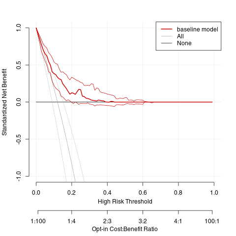
Next, we create a decision curve with two markers added to the original baseline model. We then pass a list with both decision curves to plotdecisioncurve to plot both curves.
set.seed(123)
full.model <- decision_curve(Cancer~Age + Female + Smokes + Marker1 + Marker2,
data = dcaData,
bootstraps = 50)
#since we want to plot more than one curve, we pass a list of 'decision_curve' objects to the plot
plot_decision_curve( list(baseline.model, full.model),
curve.names = c("Baseline model", "Full model"), xlim = c(0, 1), legend.position = "bottomright")
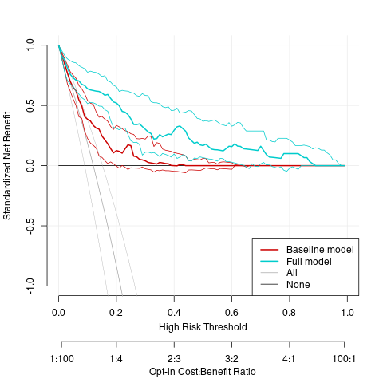
Alternative plotting functions
We include two other functions plotroccomponents and plotclinicalimpact.
plotroccomponents plots the components of the ROC curve-true positive rate and false positive rates-over a range of high risk thresholds.
If we were to use the specified model to classify 1,000 hypothetical subjects, plotclinicalimpact plots the number classified as high risk and the number with the outcome classified as high risk for a given high risk threshold.
plot_roc_components(full.model, xlim = c(0, 0.4),
col = c("black", "red"))
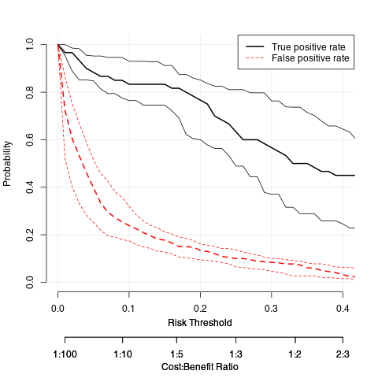
#plot the clinical impact
plot_clinical_impact(full.model, xlim = c(0, .4),
col = c("black", "blue"))
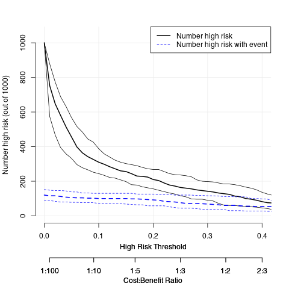
The net benefit of an ‘opt-out’ vs. ‘opt-in’ policy


set.seed(123)
opt.out.dc <- decision_curve(Cancer~Age + Female + Smokes + Marker1 + Marker2,
data = dcaData,
bootstraps = 50,
policy = 'opt-out') #set policy = 'opt-out' (default is 'opt-in')
plot_decision_curve( opt.out.dc, xlim = c(0, 1),
curve.names = "model", legend = 'bottomright')
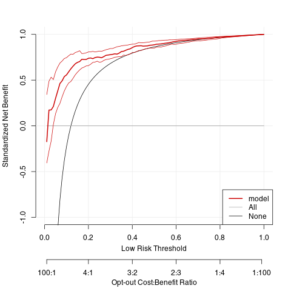
The clinical impact plots are also influenced by the policy argument. When we set policy = ‘opt-out’ the clinical impact plot displays the number low risk instead of the number high risk.
plot_clinical_impact( opt.out.dc, col = c("black", "blue"), legend = 'bottomright')
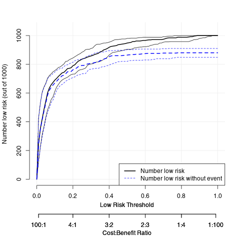
Tweaking the defaults
We show several examples of how one might change the default settings.
Fine tune the thresholds, move the legend, and change linewidth and colors. Here we are calculating many more points on the curve (see the ‘thresholds’ setting).
baseline.model <- decision_curve(Cancer~Age + Female + Smokes,
data = dcaData,
thresholds = seq(0, .4, by = .001),# calculate thresholds from 0-0.4 at every 0.001 increment.
bootstraps = 25)
full.model <- decision_curve(Cancer~Age + Female + Smokes + Marker1 + Marker2,
data = dcaData,
thresholds = seq(0, .4, by = .001),# calculate thresholds from 0-0.4 at every 0.001 increment.
bootstraps = 25)
plot_decision_curve( list(baseline.model, full.model),
curve.names = c("Baseline model", "Full model"),
col = c("blue", "red"),
lty = c(1,2),
lwd = c(3,2, 2, 1), # the first two correspond to the decision curves, then 'all' and then 'none'
legend.position = "bottomright") #adjust the legend position
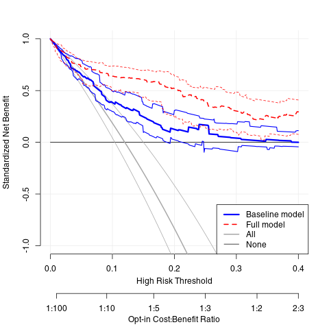
Print specific cost:benefit ratios.
plot_decision_curve( list(baseline.model, full.model),
curve.names = c("Baseline model", "Full model"),
col = c("blue", "red"),
confidence.intervals = FALSE, #remove confidence intervals
cost.benefit.axis = FALSE, #remove cost benefit axis
legend.position = "none") #remove the legend
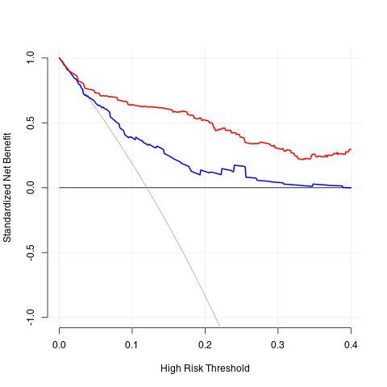
Print specific cost:benefit ratios.
plot_decision_curve( list(baseline.model, full.model),
curve.names = c("Baseline model", "Full model"),
col = c("blue", "red"),
cost.benefits = c("1:1000", "1:4", "1:9", "2:3", "1:3"), #set specific cost benefits
legend.position = "bottomright")
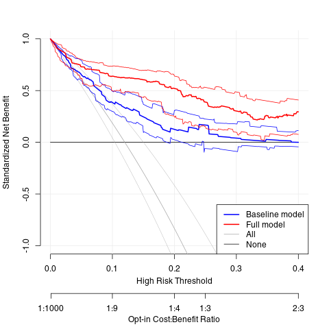
Plot net benefit instead of standardize net benefit, change confidence interval level.
baseline.model <- decision_curve(Cancer~Age + Female + Smokes,
data = dcaData,
thresholds = seq(0, .4, by = .01),
confidence.intervals = 0.9, #calculate 90% confidence intervals
bootstraps = 25)
full.model <- decision_curve(Cancer~Age + Female + Smokes + Marker1 + Marker2,
data = dcaData,
thresholds = seq(0, .40, by = .01),
confidence.intervals = 0.9, #calculate 90% confidence intervals
bootstraps = 25)
plot_decision_curve( list(baseline.model, full.model),
curve.names = c("Baseline model", "Full model"),
col = c("blue", "red"),
ylim = c(-0.05, 0.15), #set ylim
lty = c(2,1),
standardize = FALSE, #plot Net benefit instead of standardized net benefit
legend.position = "topright")
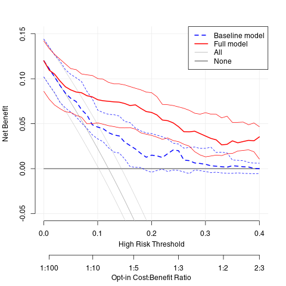
Providing fitted risks from a previously specified model
skip
Printing estimates
full.model <- decision_curve(Cancer~Age + Female + Smokes + Marker1 + Marker2,
data = dcaData,
thresholds = seq(.01, .99, by = .05),
bootstraps = 25, policy = "opt-out")
summary(full.model, measure = "NB") #outputs standardized net benefit by default
Net Benefit (95% Confidence Intervals):
--------------------------------------------------------------------------------------------
risk cost:benefit percent All Cancer ~ Age + Female + Smokes None
threshold ratio low risk + Marker1 + Marker2
----------- -------------- -------------- -------- -------------------------------- --------
0.01 99:1 24.8 0 -0.152 -11
(13.8, 48.6) (0, 0) (-0.55, 0.392)
0.06 47:3 60.2 0 0.335 -1
(46.8, 71) (0, 0) (0.183, 0.61)
0.11 89:11 70.2 0 0.52 -0.091
(64.2, 76.4) (0, 0) (0.377, 0.709)
0.16 21:4 75.6 0 0.618 0.25
(70.6, 80.8) (0, 0) (0.507, 0.733)
0.21 79:21 79.6 0 0.653 0.429
(74.8, 85.2) (0, 0) (0.586, 0.723)
0.26 37:13 84 0 0.655 0.538
(79, 89) (0, 0) (0.617, 0.763)
0.31 69:31 86.2 0 0.688 0.613
(81.4, 91.8) (0, 0) (0.639, 0.783)
0.36 16:9 89 0 0.718 0.667
(85.2, 92.8) (0, 0) (0.66, 0.811)
0.41 59:41 92.4 0 0.763 0.707
(87.8, 94.6) (0, 0) (0.686, 0.81)
0.46 27:23 93.8 0 0.768 0.739
(89, 97.2) (0, 0) (0.721, 0.816)
0.51 49:51 95 0 0.785 0.765
(91.6, 97.6) (0, 0) (0.736, 0.829)
0.56 11:14 96.2 0 0.798 0.786
(93, 98.4) (0, 0) (0.748, 0.846)
0.61 39:61 96.8 0 0.817 0.803
(94.6, 98.6) (0, 0) (0.78, 0.857)
0.66 17:33 97.2 0 0.827 0.818
(94.8, 99) (0, 0) (0.79, 0.861)
0.71 29:71 97.8 0 0.837 0.831
(95.2, 99) (0, 0) (0.801, 0.873)
0.76 6:19 98.4 0 0.845 0.842
(96, 99.4) (0, 0) (0.81, 0.879)
0.81 19:81 98.8 0 0.855 0.852
(97.6, 100) (0, 0) (0.821, 0.884)
0.86 7:43 99.2 0 0.862 0.86
(97.8, 100) (0, 0) (0.829, 0.891)
0.91 9:91 100 0 0.868 0.868
(98.8, 100) (0, 0) (0.837, 0.897)
0.96 1:24 100 0 0.875 0.875
(99.8, 100) (0, 0) (0.846, 0.902)
--------------------------------------------------------------------------------------------
head(full.model$derived.data)
thresholds FPR FNR TPR TNR NB sNB rho prob.high.risk prob.low.risk DP nonDP
1 0.01 0.7227273 0.03333333 0.9666667 0.2772727 -0.1520000 -0.1727273 0.12 0.752 0.248 0.116 0.244
2 0.06 0.3340909 0.13333333 0.8666667 0.6659091 0.3353333 0.3810606 0.12 0.398 0.602 0.104 0.586
3 0.11 0.2250000 0.16666667 0.8333333 0.7750000 0.5201818 0.5911157 0.12 0.298 0.702 0.100 0.682
4 0.16 0.1659091 0.18333333 0.8166667 0.8340909 0.6185000 0.7028409 0.12 0.244 0.756 0.098 0.734
5 0.21 0.1295455 0.25000000 0.7500000 0.8704545 0.6531429 0.7422078 0.12 0.204 0.796 0.090 0.766
6 0.26 0.1000000 0.40000000 0.6000000 0.9000000 0.6553846 0.7447552 0.12 0.160 0.840 0.072 0.792
model FPR_lower FPR_upper FNR_lower FNR_upper TPR_lower TPR_upper TNR_lower
1 Cancer ~ Age + Female + Smokes + Marker1 + Marker2 0.46102450 0.8402778 0.00000000 0.06382979 0.9361702 1.0000000 0.1597222
2 Cancer ~ Age + Female + Smokes + Marker1 + Marker2 0.21603563 0.4745370 0.03703704 0.18032787 0.8196721 0.9629630 0.5254630
3 Cancer ~ Age + Female + Smokes + Marker1 + Marker2 0.15590200 0.2857143 0.05882353 0.25000000 0.7500000 0.9411765 0.7142857
4 Cancer ~ Age + Female + Smokes + Marker1 + Marker2 0.11358575 0.2018561 0.11764706 0.30645161 0.6935484 0.8823529 0.7981439
5 Cancer ~ Age + Female + Smokes + Marker1 + Marker2 0.09492274 0.1577726 0.14084507 0.40350877 0.5964912 0.8591549 0.8422274
6 Cancer ~ Age + Female + Smokes + Marker1 + Marker2 0.06401766 0.1252900 0.23943662 0.47169811 0.5283019 0.7605634 0.8747100
TNR_upper NB_lower NB_upper sNB_lower sNB_upper rho_lower rho_upper prob.high.risk_lower prob.high.risk_upper
1 0.5389755 -0.5500000 0.3920000 -0.6365741 0.4355556 0.094 0.148 0.514 0.862
2 0.7839644 0.1833333 0.6100000 0.2088079 0.6792873 0.094 0.148 0.290 0.532
3 0.8440980 0.3770909 0.7094545 0.4324437 0.7900385 0.094 0.148 0.236 0.358
4 0.8864143 0.5070000 0.7330000 0.5804795 0.8162584 0.094 0.148 0.192 0.294
5 0.9050773 0.5855238 0.7232381 0.6669891 0.8053876 0.094 0.148 0.148 0.252
6 0.9359823 0.6173846 0.7626154 0.7162235 0.8417388 0.094 0.148 0.110 0.210
prob.low.risk_lower prob.low.risk_upper DP_lower DP_upper nonDP_lower nonDP_upper cost.benefit.ratio
1 0.138 0.486 0.088 0.144 0.138 0.484 99:1
2 0.468 0.710 0.080 0.132 0.454 0.704 47:3
3 0.642 0.764 0.074 0.124 0.620 0.758 89:11
4 0.706 0.808 0.070 0.124 0.684 0.796 21:4
5 0.748 0.852 0.060 0.124 0.722 0.820 79:21
6 0.790 0.890 0.052 0.108 0.750 0.848 37:13
Case-control data
If data is from a case-control study instead of an observational cohort, an estimate of the population level outcome prevalence is needed to calculate decision curves. Decision curves can be calculated by setting study.design = "case-control" and setting the population.prevalence. Once the decisioncurve is calculated, all other calls to the plot functions remain the same. Note that bootstrap sampling is done stratified by outcome status for these data.
#simulated case-control data with same variables as above
data(dcaData_cc)
#estimated from the population where the
#case-control sample comes from.
population.rho = 0.11
baseline.model_cc <- decision_curve(Cancer~Age + Female + Smokes,
data = dcaData_cc,
thresholds = seq(0, .4, by = .01),
bootstraps = 25,
study.design = "case-control",
population.prevalence = population.rho)
full.model_cc <- decision_curve(Cancer~Age + Female + Smokes + Marker1 + Marker2,
data = dcaData_cc,
thresholds = seq(0, .4, by = .01),
bootstraps = 25,
study.design = "case-control",
population.prevalence = population.rho)
plot_decision_curve( list(baseline.model_cc, full.model_cc),
curve.names = c("Baseline model", "Full model"),
col = c("blue", "red"),
lty = c(1,2),
lwd = c(3,2, 2, 1),
legend.position = "bottomright")
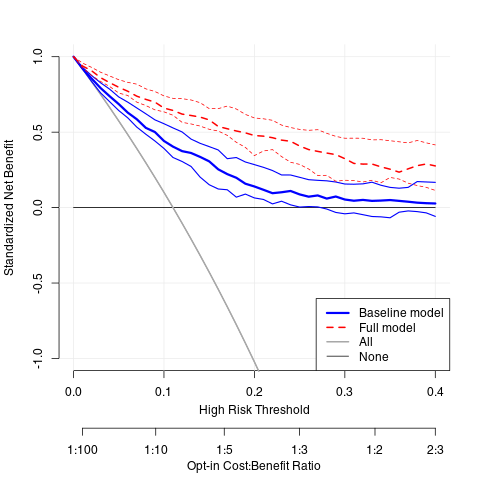
Cross-validation
We provide a wrapper to perform k-fold cross-validation to obtain bias corrected decision curves. Once cvdecisioncurve is called, all plot and summary functions work the same as shown above for decisioncurve output. Confidence interval calculation is not available at this time for cross-validated curves.
full.model_cv <- cv_decision_curve(Cancer~Age + Female + Smokes + Marker1 + Marker2,
data = dcaData,
folds = 5,
thresholds = seq(0, .4, by = .01),
policy = "opt-out")
full.model_apparent <- decision_curve(Cancer~Age + Female + Smokes + Marker1 + Marker2,
data = dcaData,
thresholds = seq(0, .4, by = .01),
confidence.intervals = 'none', policy = "opt-out")
plot_decision_curve( list(full.model_apparent, full.model_cv),
curve.names = c("Apparent curve", "Cross-validated curve"),
col = c("red", "blue"),
lty = c(2,1),
lwd = c(3,2, 2, 1),
legend.position = "bottomright")
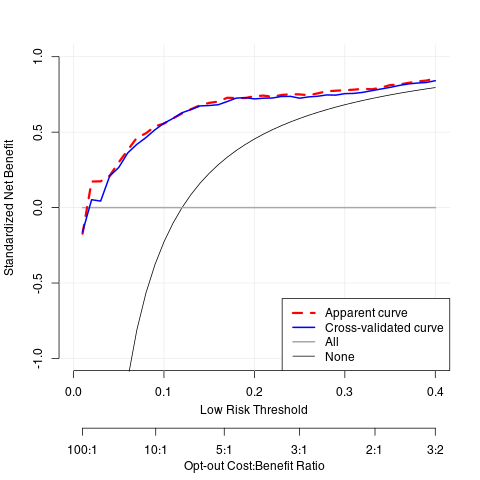
decisioncurveanalysis.org
Diagnostic and prognostic models are typically evaluated with measures of accuracy that do not address clinical consequences. Decision-analytic techniques allow assessment of clinical outcomes but often require collection of additional information and may be cumbersome to apply to models that yield a continuous result. Decision curve analysis is a method for evaluating and comparing prediction models that incorporates clinical consequences, requires only the data set on which the models are tested, and can be applied to models that have either continuous or dichotomous results. This document will walk you through how to perform a decision curve analysis (DCA) in many settings, and how to interpret the resulting curves. In DCA prediction models are compared to two default strategies: 1) assume that all patients are test positive and therefore treat everyone, or 2) assume that all patients are test negative and offer treatment to no one. “Treatment” is considered in the widest possible sense, not only drugs, radiotherapy or surgery, but advice, further diagnostic procedures or more intensive monitoring. For more details on DCA, visit decisioncurveanalysis.org. You’ll find the original articles explaining the details of the DCA derivation along with other papers providing more details.
Decision Curve Analysis for Binary Outcomes

Basic Data Set-up
source("/home/lengyue/MEGA/Emacs-lengyue/Wiki-lengyue/Example/dca/dca.r")
data.set = read.delim("/home/lengyue/MEGA/Emacs-lengyue/Wiki-lengyue/Example/dca/dca.txt", header=TRUE, sep="\t")
attach(data.set)
head(data.set)
patientid cancer dead ttcancer risk_group casecontrol age famhistory marker cancerpredmarker 1 1 0 0 3.0086860 low 0 64.03445 0 0.7763090 0.0372006 2 2 0 0 0.2491345 high 0 78.46741 0 0.2670864 0.5789074 3 3 0 0 1.5903580 low 0 64.14617 0 0.1696214 0.0215508 4 4 0 0 3.4566140 low 1 58.53482 0 0.0239958 0.0039097 5 5 0 0 3.3287420 low 0 63.99250 0 0.0709100 0.0187900 6 6 0 0 0.0488209 intermediate 1 65.74824 0 0.4275467 0.0426375
Univariate Decision Curve Analysis
First, we want to confirm family history of cancer is indeed associated with the biopsy result. Via logistic regression with cancer as the outcome, we can see that family history is related to biopsy outcome (OR 1.80; 95% CI 1.09, 2.99; p=0.022). The DCA can help us address the clinical utility of using family history to predict biopsy outcome.
summary(glm(cancer ~ famhistory, family=binomial(link="logit")))
Call:
glm(formula = cancer ~ famhistory, family = binomial(link = "logit"))
Deviance Residuals:
Min 1Q Median 3Q Max
-0.6842 -0.5224 -0.5224 -0.5224 2.0294
Coefficients:
Estimate Std. Error z value Pr(>|z|)
(Intercept) -1.9227 0.1190 -16.163 <2e-16
famhistory 0.5899 0.2585 2.282 0.0225
(Dispersion parameter for binomial family taken to be 1)
Null deviance: 607.45 on 749 degrees of freedom
Residual deviance: 602.60 on 748 degrees of freedom
AIC: 606.6
Number of Fisher Scoring iterations: 4
dca(data=data.set, outcome="cancer", predictors="famhistory")
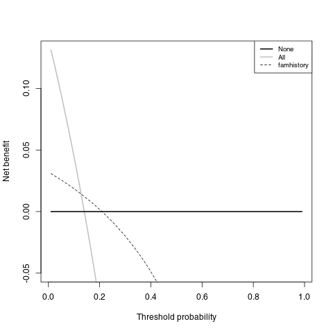
First, note that there are many threshold probabilities shown here that are not of interest. For example, it is unlikely that a patient would demand that they had at least a 50% risk of cancer before they would accept a biopsy. Let’s do the DCA again, this time restricting the output to threshold probabilities a more clinically reasonable range, between 0% and 35% with the xstop option.
dca(data=data.set, outcome="cancer", predictors="famhistory", xstop=0.35)
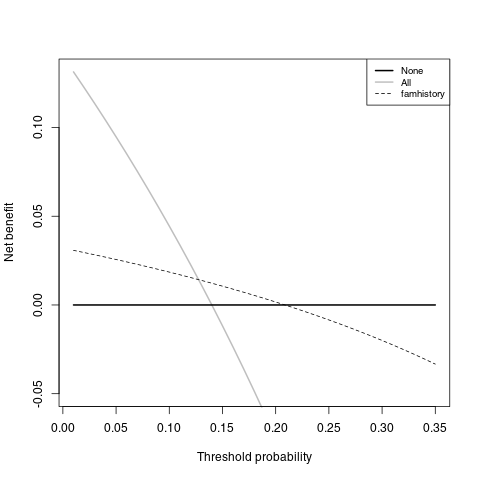
Now that the graph is showing a more reasonable range of threshold probabilities, let’s assess the clinical utility of family history alone. We can see here that although family history is significantly associated with biopsy outcome, it only adds value to a small range of threshold probabilities near 13% - 20%. If your personal threshold probability is 15% (i.e. you would undergo a biopsy if your probability of cancer was greater than 15%), then family history alone can be beneficial in making the decision to undergo biopsy. However, if your threshold probability is less than 13% or higher than 20%, then family history adds no more benefit than a biopsy all, or biopsy none scheme.
Multivariable Decision Curve Analysis
We wanted to examine the value of a statistical model that incorporates family history, age, and the marker. First we will build the logistic regression model with all three variables, and second we would have saved out the predicted probability of having cancer based on the model. Note that in our example dataset, this variable actually already exists so it wouldn’t be necessary to create the predicted probabilities once again.
We now want to compare our different approaches to cancer detection: biopsying everyone, biopsying no-one, biopsying on the basis of family history, or biopsying on the basis of a multivariable statistical model including the marker, age and family history of cancer.
#run the multivariable model
model = glm(cancer ~ marker + age + famhistory, family=binomial(link="logit"))
#save out predictions in the form of probabilities
data.set$cancerpredmarker = predict(model, type="response")
dca(data=data.set, outcome="cancer", predictors=c("cancerpredmarker","famhistory"), xstop=0.35)
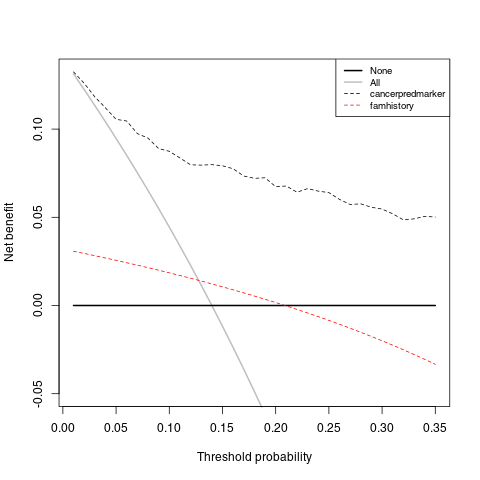
Decision curve analysis can incorporate joint or conditional testing. All that is required is that appropriate variables are calculated from the data set; decision curves are then calculated as normal. First we would create the variables to represent our joint and conditional approach. For our example, let us use 0.15 as the cutoff probability level for patients who had their marker measured and should be biopsied.
#Create a variable for the strategy of treating only high risk patients
#This will be 1 for treat and 0 for dont treat
data.set$high_risk = ifelse(risk_group=="high", 1, 0)
#Treat based on Joint Approach
data.set$joint = ifelse(risk_group=="high" | cancerpredmarker > 0.15, 1, 0)
#Treat based on Conditional Approach
data.set$conditional = ifelse(risk_group=="high" | (risk_group=="intermediate" & cancerpredmarker > 0.15), 1, 0)
#Run decision curve analysis
dca(data=data.set, outcome="cancer", predictors=c("high_risk", "joint",
"conditional"), xstop=0.35)
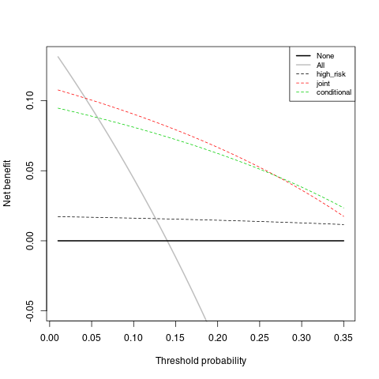
Decision Curve Analysis for Survival Outcomes

source("/home/lengyue/MEGA/Emacs-lengyue/Wiki-lengyue/Example/dca/stdca.R")
data.set = read.delim("/home/lengyue/MEGA/Emacs-lengyue/Wiki-lengyue/Example/dca/dca.txt", header=TRUE, sep="\t")
library(survival)
Srv = Surv(data.set$ttcancer, data.set$cancer)
summary(Srv)
time status
Min. :0.000512 Min. :0.00
1st Qu.:0.269994 1st Qu.:0.00
Median :0.584479 Median :0.00
Mean :0.852950 Mean :0.14
3rd Qu.:1.176930 3rd Qu.:0.00
Max. :5.284884 Max. :1.00

#Run the cox model
coxmod = coxph(Srv ~ age + famhistory + marker, data=data.set)
#the probability of failure is calculated by subtracting the probability of
#survival from 1.
data.set$pr_failure18 = c(1- (summary(survfit(coxmod, newdata=data.set), times=1.5)$surv))
#Run the decision curve analysis (with a smoother)
stdca(data=data.set, outcome="cancer", ttoutcome="ttcancer", timepoint=1.5, predictors="pr_failure18", xstop=0.5, smooth=TRUE)
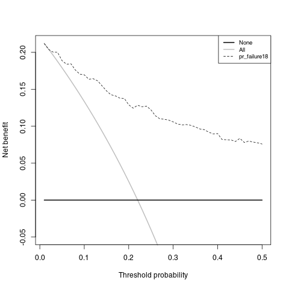
Assessing Clinical Utility in a Case-Control Design
#Use only the data from the case control study
casecontrol = subset(data.set, casecontrol ==1)
#Create the model
model = glm(cancer~ age + famhistory, family=binomial(link="logit"),
data=casecontrol)
#Save out the linear predictor
xb = predict(model)
#The true risk is stored in a scalar
true = 0.05
#The observed risk, the mean of our data, is stored in a scalar
design = mean(casecontrol$cancer)
#The Bayes factor is stored in a scalar
Bayes = log((true/(1-true))/(design/(1-design)))
#We add the Bayes factor to the linear predictor
xb = xb+Bayes
#Convert to a probability
casecontrol$phat = exp(xb)/(1+exp(xb))
#Run the decision curve
dca(data=casecontrol, outcome="phat", predictors="phat", xstop=0.35)
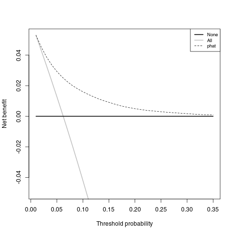
Creative Commons licensing
TITLE: Decision curve anaysis (决策曲线分析)
AUTHOR: lengyueyang
DATE: 2018-02-04 09:56:36 UTC+08:00
UPDATED:
LICENSE: The blog is licensed under a Creative Commons Attribution-NonCommercial-ShareAlike 4.0 International License, commercial use is not allowed, for any reprint, please indicate address and signature.

Comments
Comments powered by Disqus